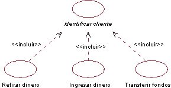
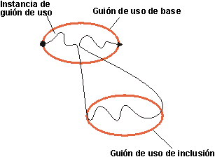
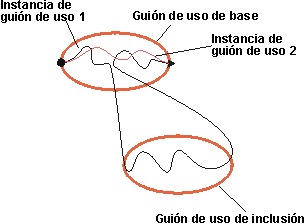
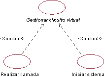

| Directriz: Relación de inclusión |
 |
|
| Elementos relacionados |
|---|
ExplicaciónLa relación de inclusión conecta un guión de uso de base a un guión de uso de inclusión. El guión de uso de inclusión siempre es abstracto. Describe un segmento del comportamiento que se inserta en una instancia de guión de uso que ejecuta el guión de uso de base. El guión de uso de base tiene control de la relación para la inclusión y puede depender del resultado de que se lleve a cabo la inclusión, pero ni la base ni la inclusión pueden acceder a los atributos entre sí. En este sentido, la inclusión está encapsulada y representa el comportamiento que se puede reutilizar en guiones de uso de base diferentes. La relación de inclusión se puede utilizar para lo siguiente:
Ejemplo: En un sistema de cajero automático, los guiones de uso Retirar dinero, Ingresar dinero en efectivo y Transferir fondos necesitan incluir cómo se identifica el cliente en el sistema. Este comportamiento se puede extraer en un nuevo guión de uso de inclusión llamado Identificar cliente, que incluyen los tres guiones de uso de base. Los guiones de uso de base son independientes del método que se utiliza para la identificación y, por este motivo, se encapsula en el guión de uso de inclusión. Desde la perspectiva de los guiones de uso de base, no importa si el método para la identificación va a leer una tarjeta bancaria magnética, o bien, si va a realizar un reconocimiento de retina. Sólo dependen del resultado de Identificar cliente, que es la identidad del cliente. Y viceversa, desde la perspectiva del guión de uso Identificar cliente, no importa cómo utiliza el guión de uso de base la identidad del cliente ni lo que sucede en el mismo antes de ejecutar la inclusión; el método para la identificación sigue siendo exactamente el mismo.  En el sistema de cajero automático, los guiones de uso Retirar dinero, Ingresar dinero en efectivo y Transferir fondos incluyen el guión de uso Identificar cliente. Un guión de uso de base puede tener varias inclusiones. Un guión de uso de inclusión se puede incluir en varios guiones de uso de base, lo que no indica ninguna relación entre los guiones de uso de base. Pueden incluso existir varias relaciones de inclusión entre el mismo guión de uso de inclusión y el guión de uso de base, siempre que la inclusión se haya insertado en ubicaciones diferentes del guión de uso de base. La relación de inclusión define la ubicación. Se pueden anidar todas las adiciones, lo que significa que un guión de uso de inclusión puede servir como guión de uso de base para otra inclusión. Puesto que los guiones de uso de inclusión son abstractos, no necesitan un actor asociado. Sólo se necesita una asociación de comunicación con un actor si el comportamiento en la inclusión implica, explícitamente, la interacción con un actor. Ejecución de la inclusiónEl comportamiento de la inclusión se inserta en una ubicación del guión de uso de base. Cuando una instancia de guión de uso que sigue la descripción de un guión de uso de base llega a una ubicación del guión de uso de base del que se ha definido la relación de inclusión, sigue la descripción del guión de uso de inclusión. Una vez llevada a cabo la inclusión, la instancia de guión de uso se reanuda a partir del punto en el que dejó el guión de uso de base.  Una instancia de guión de uso que sigue la descripción de un guión de uso de base, incluida su inclusión. La relación de inclusión no es condicional: si la instancia de guión de uso llega a la ubicación del guión de uso de base para la que se ha definido, siempre se ejecuta. Si desea expresar una condición, debe hacerlo como parte del guión de uso de base. Si la instancia de guión de uso no llega nunca a la ubicación para la que se ha definido la relación de inclusión, no se ejecuta.  La instancia de guión de uso Nº 1 llega a la ubicación del guión de uso de base para la que se ha definido la relación de inclusión, y la inclusión se lleva a cabo. La instancia de guión de uso Nº 2 no llega a dicha ubicación y, por consiguiente, no se realiza la inclusión como parte de dicha instancia. El guión de uso de inclusión es un segmento continuo de comportamiento, del cual se incluye todo en una ubicación del guión de uso de base. Si tiene segmento separados de comportamiento que se deben insertar en ubicaciones diferentes, debe tener en cuenta la relación de ampliación (consulte el apartado Producto de trabajo: Relación de ampliación), o bien, el apartado Directriz de producto de trabajo: Generalización de guión de uso). Descripción de la relación de inclusiónPara la relación de inclusión, debe definir la ubicación de la secuencia de comportamiento del guión de uso de base en el que se va a insertar la inclusión. La ubicación se puede definir haciendo referencia a un subflujo o paso concreto del flujo de sucesos del guión de uso de base. Ejemplo: En el sistema de cajero automático, el guión de uso Retirar dinero incluye el guión de uso Identificar cliente. La relación de inclusión de Retirar dinero a Identificar cliente se puede describir tal como se indica a continuación: Insertar Identificar cliente entre las secciones 1.1 Iniciar el guión de uso y 1.2 Solicitar importe del flujo de sucesos de Retirar dinero. Con el objeto de ofrecer mayor claridad, también debe mencionar la inclusión en el texto que describe el flujo de sucesos del guión de uso de base. Ejemplo de usoSi en un guión de uso existe un segmento del comportamiento en el que se observe que el guión de uso no depende del modo en el que se llevan a cabo las cosas, pero depende del resultado de la función, puede simplificar el guión de uso extrayendo su comportamiento a un guión de uso de inclusión. El guión de uso de inclusión se puede incluir en varios guiones de uso de base, lo que significa que le permite reutilizar el comportamiento entre guiones de uso del modelo. Considere los esquemas paso a paso siguientes de los guiones de uso para un sistema telefónico simple: Establecer llamada
Iniciar sistema
El texto listado en azul es muy similar; en ambos casos se lleva a cabo el mismo comportamiento, aunque por motivos muy diferentes. Se puede aprovechar la similitud, y extraer el comportamiento común a un nuevo guión de uso, Gestionar circuitos virtuales. Una vez que se ha extraído el comportamiento común, los guiones de uso se convierten en: Establecer llamada
Iniciar sistema
En un diagrama de guión de uso, la relación de inclusión que se crea se ilustra del modo siguiente:  Los guiones de uso Establecer llamada e Iniciar sistema incluyen el comportamiento del guión de uso abstracto Gestionar circuito virtual. |
© Copyright IBM Corp. 1987, 2006. Reservados todos los derechos. |